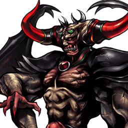

Dissidia Final Fantasy
Chaos
Boss final des modes solo — non jouable en versus
Chaos est le boss non jouable des modes solo de Dissidia 012. Il n'apparaît pas sur l'écran de sélection du mode versus et la scène compétitive ne le joue pas ; le wiki ne documente d'ailleurs ni coups, ni stats, ni builds pour lui.